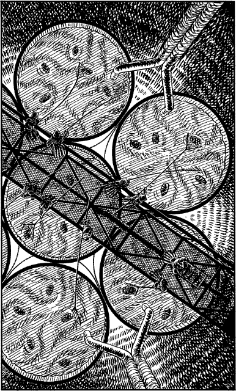

214
You follow the narrow passageway which gradually ascends towards the north. The clanging of a distant alarm bell reminds you that all of Mogaruith has been alerted to your presence and, in light of the devastation you have caused, you know better than to expect mercy from the Cenerese if they should catch you now.
After a few minutes the passage arrives at a hall where a railed balcony overlooks a deep circular shaft. A broad stone staircase at the north wall ascends to the next level and you stride swiftly towards it. As you pass the balcony you pause for a moment to stare down at a fascinating sight. Hundreds of feet below, at the base of the shaft, huge vats filled with a sickly brown fluid bubble and seethe as if they are boiling on a hob. You notice scores of robed druids standing on a great iron gantry suspended above these vats, each one equipped with what appears to be a gigantic butterfly net. They are busily scooping up large brown objects which keep bobbing to the surface of the morass. You use your Magnakai skills to magnify your vision and, as the scene looms larger, you see that the objects are alive. Your stomach churns with revulsion when you suddenly realize what it is that you are looking at. These are the spawning vats in which the Ceners create their loathsome, disease-ridden Vazhag.

A noise from the staircase attracts your attention; it is the sound of shuffling footfalls descending the stairs. Moments later your keen sense of smell identifies the threat: a Vazhag patrol is hurrying towards the hall.
If you wish to attempt to hide from this patrol, turn to 8.
If you decide to stand and fight them, turn to 262.